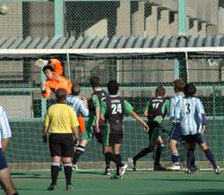
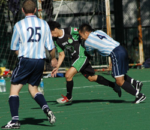
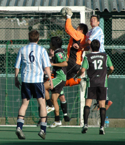

|
St Mary's, Sat 7th Oct. Stunned silence is becoming the norm after YCAC games this season. "WTF just happened? " said the BFC after letting 10 man YCAC off the hook a while back at Misato. "WTF just happened?" pondered the YCAC at 4.30ish on saturday at St Marys.
Close your eyes, lose your focus, lose your shape or all of the above against the Hibs and you'll end up losing a game 4-1 that you really ought to have won
Not that it was a travesty, daylight robbery or anything such thing. It was a close game, hard fought in a friendly or at least mutually respectful kind of fashion, that should have gone the way of all other Hibs/YCAC games before it, ending in a draw or being decided by the odd goal
This had the look and feel of a match up between teams serious about mounting a TML title challenge. 14 man squads, proper warm ups and not even an odd sock to be seen. Yeah, it matters! Look like a team/play like a team.
Damian Hart, regal in a new midfield role like a modern day Jim Baxter, scored something of a shocker 10 minutes into the game, meeting an inswinging Joe Takeda corner with a deft flick of his head just before Hitoshi's fists reached it (the corner not Damians head......probably). 1-0 and that would be the story of the next 40 minutes. YCAC and James Absolom, in particular, giving the Hibs defence a torrid time. James was completely dominant in the air but missed a deserved goal by inches on several occasions, hitting the crossbar and then bravely outjumping Hitoshi to a 50/50 ball only to see the header roll just wide of the unguarded Hibs goal.
Unfortunately for YCAC, in the middle of all this and just at the wrong time, 5 minutes before HT, Hibs had equalised. Keen, but not keen enough, to get to the break with their lead intact a corner was allowed to arrow its way through all the 6 foot YCAC defenders directly onto Tomos head. Standing alone inside the 6 yard box, he only had to stoop to nod it in
No doubt the Hibs are a force going forward but a big part of the reason for that is that they have pacey defenders who they trust enough to leave man for man while the rest pile forward. YCACs attack had the advantage in height and strength but failed to make it pay. When it wasn't working, there was no Plan B, too big a gap between forwards and midfield and not enough pace for route 1 to trouble Ike and Jay. Hibs midfield and attack, on the other hand, becomes as one when they get the bit between their teeth. You keep Mick and Yohei quiet and Yama and Tomo step up or Yasu and Bevan. YCAC knew what was coming and managed for the 1st 60 minutes to keep them playing in the middle 1/3. The 2nd goal proved the catalyst for the Visitors collapse, however, its effect doubly deflating as it came just after a period when YCAC had a number of chances to retake the lead and the initiative. Pushed back into their own penalty area YCAC missed a number of chances to clear and eventually Yasu crashed it in from short range
Now the jig was up. the game was being played more and more in the YCAC last 1/3 and the defence was beginning to tire. Fair dos, it was only their 2nd game against the 5th for the home side, but this was compounded by some poor decision making in the name of chasing the game. Yama got to the byline and pulled it back for a comfortable Tomo tap in. Tomo, under no semblance of a challenge despite being deep in the enemy box, curled a sweet one past the diving Gary Hodgson for the 4th. It had all been somewhat inevitable since the 2nd goal
Despite Tomo's hat trick Yama had probably been the main thorn in the oppositions side but you felt that any one of the Hibs piling into the attack could have hurt you. Once you let them start playing inside your penalty area they will just hold it until someone has a clear shot.
YCAC will be hopeful next time the 2 sides meet for a bit more luck in front of goal and to be able to maintain enough strength and concentration to defend their line higher up the pitch for the whole 80 minutes. A noble effort for 60 just wasn't enough this time.
All very reminiscent of the pasting the Swiss took at St Mary's early last season. They recovered their poise to beat the Hibs in the return and challenge for honours. Hopefully YCAC will be able to do the same. What better way to get back on the bike than to play nemesis Sala in your very next game?
Report – Steve Taw.
|